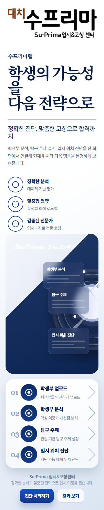
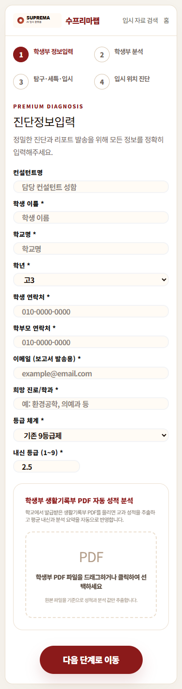
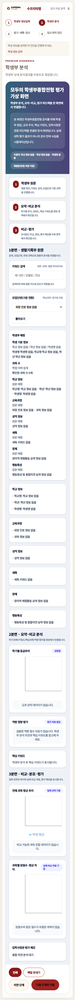
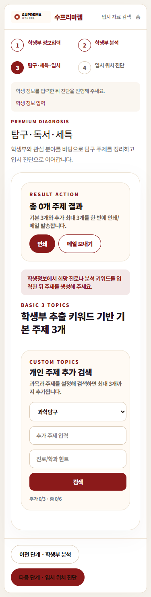
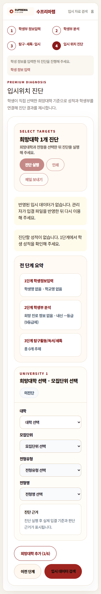

08 개선 시안 · 아직 미구현
마스터 → 본사 관리자 → 학원 관리자 → 담당 컨설턴트 → 배정 학생. 역할별 관리·배정 화면은 설계이며 현재 기능과 구분합니다.
역할별 개선 시안 열기- 서비스 소개의 명칭을 수프리마랩으로 통일
- 학생 선택을 업무 시작점으로 배치
- 제목·설명 영역 축소 및 잘린 문구 개선
- 주요 진단과 별도 탐구·세특의 중복 진입 정리
- 분석 결과와 적용 자료 버전을 함께 표시
09 개선 후 모바일 화면
소개·진단 1~4단계 / 375px 폭 / 가로 넘침 없음
최적화 적용 결과
학생의 가능성을
다음 전략으로
모바일 전체 화면 펼치기

진단정보입력
모바일 전체 화면 펼치기

학생부 분석
모바일 전체 화면 펼치기

탐구·독서·세특
모바일 전체 화면 펼치기

입시위치 진단
모바일 전체 화면 펼치기
